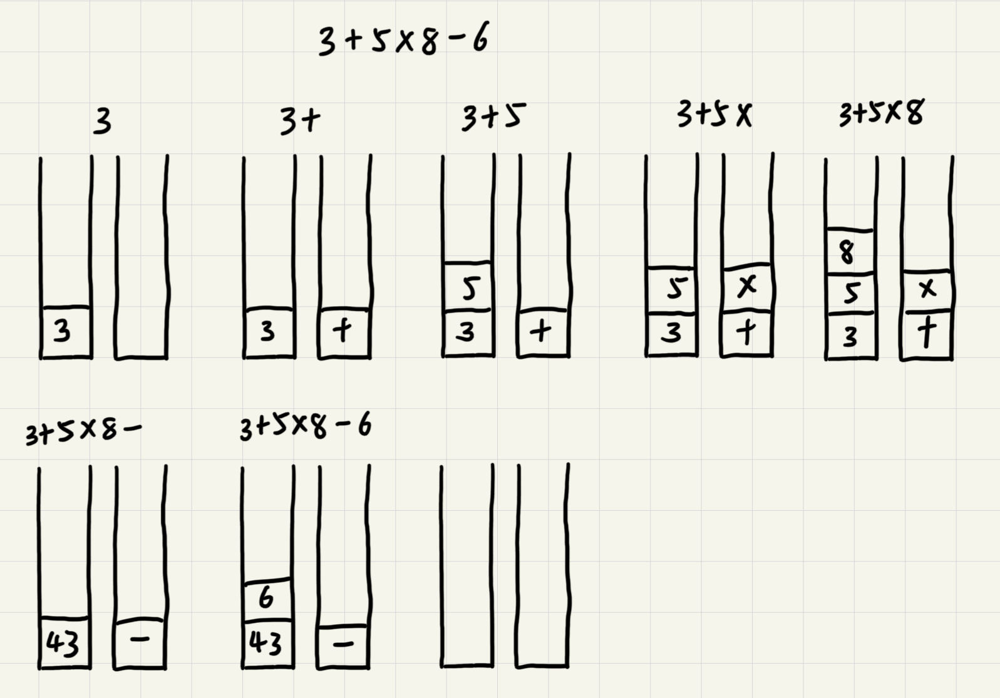
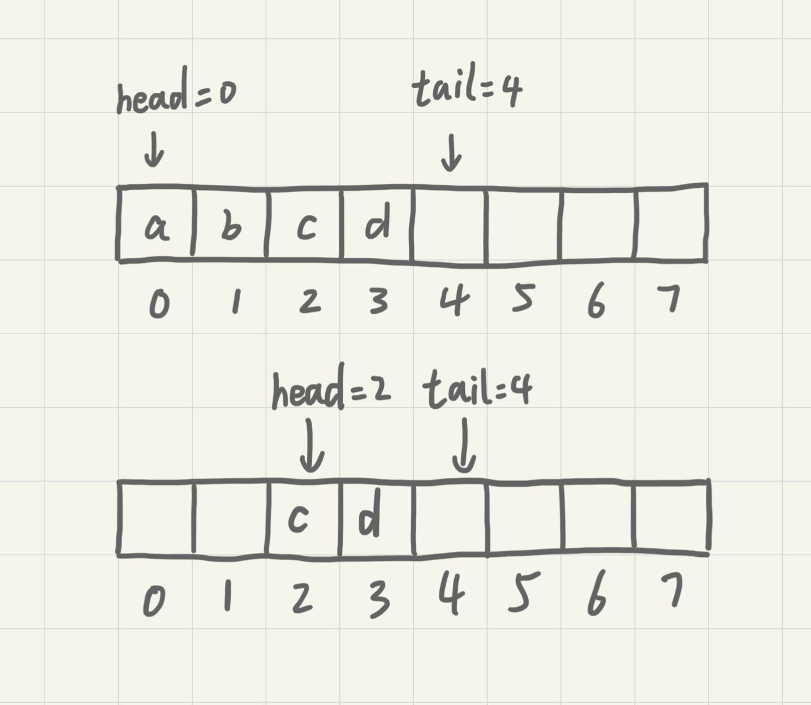
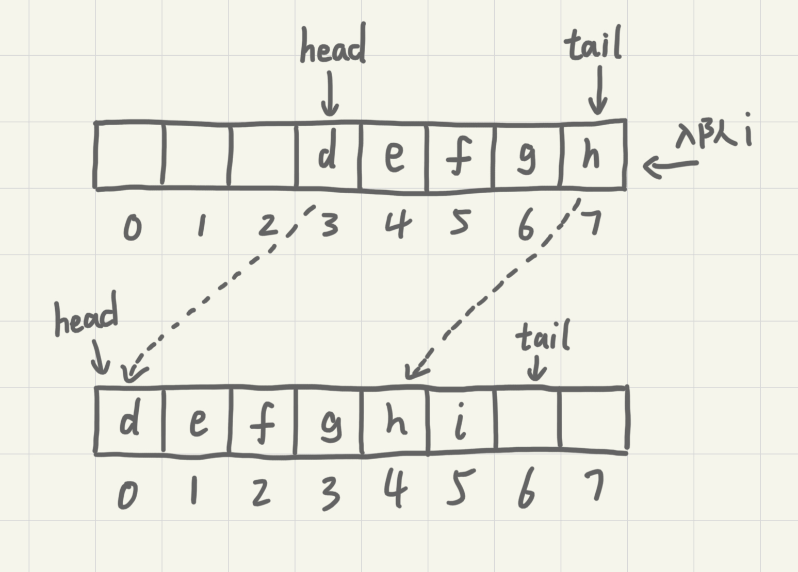

数组
数组是一种线性表数据结构。它用一组连续的内存空间，来存储一组具有相同类型的数据。
线性表
数据排成像一条线一样的结构。每个线性表上的数据最多只有前和后两个方向。除了数组，链表、队列、栈等也是线性表结构。
与之相对的是非线性表，如二叉树、图、堆等。之所以叫做非线性表，是因为在非线性表中数据之间并不是简单的前后关系。
随机访问
因为有了连续的内存空间和相同类型的数据和线性表这两个限制，数组得以实现“随机访问”。同时，这两个限制也让数组的很多操作变得低效，比如要想在数组中删除、插入一个数据，为了保证连续性，就需要做大量的数据搬移工作。
计算机会给每个内存单位分配一个地址，通过地址来访问内存中的数据。当计算机需要随机访问数组中的某个元素时，他会首先通过寻址公式a[i]_address = base_address + i * data_type_size计算出该元素存储的内存地址。其中data_type_size表示数组中每个元素的大小。
低效的“插入”和“删除”
假设数组的长度为n，现在，如果我们需要将一个数据插入到数组中的第k个位置。为了把第k个位置腾出来给新来的数据，我们需要将第k~n这部分的元素都顺序地往后挪一位。如果在数组的末尾插入数据，不需要移动数据，时间复杂度为O(1)。但如果在数组的开头插入元素，那所有的数据都需要依次往后移动一位，所以最坏的时间复杂度为O(n)。因为我们在每个位置插入元素的概率是一样的，所以平均情况时间复杂度为(1+2+...n)/n=O(n)。
但是如果数组只是被当作存储数据的集合，存储的数据之间没有任何规律。在这种情况下，如果要将某个数据插入到第k个位置，为了避免大规模的数据搬移，我们可以直接将第k位的数据搬移到数组末尾，把新元素直接放入第k个位置。
跟插入数据类似，删除第k个位置的数据也需要搬移数据。平均时间复杂度也是O(n)。
必知必会
实现一个支持动态扩容的数组
实现一个大小固定的有序数组，支持动态增删改操作
实现两个有序数组合并为一个有序数组
链表
数组需要一块连续的内存空间来存储，对内存要求比较高。而链表恰恰相反，它并不需要一块连续的内存空间，它通过“指针”将一组零散的内存块串联起来使用。
链表中零散的内存块称为节点，为了将所有的节点串联起来，每个链表的节点除了存储数据之外还需要记录链上的下一个节点的地址。这个记录下个节点地址的指针称为后继指针next。
链表中的第一个节点称为头节点，最后一个节点叫做尾节点。其中，头节点用来记录链表的基地址，可以由此遍历得到整条链表。而尾节点特殊的地方在于指针不是指向下一个节点，而是指向一个空地址NULL，表示这是链表上的最后一个节点。
删除和插入
与数组一样，链表也支持数据的查找、插入和删除操作。
在进行数组的插入、删除操作时，为了保持内存数据的连续性，需要做大量的数据搬移，所以时间复杂度时O(n)。而在链表中插入或删除一个数据并不需要保持内存的连续性和搬移节点，因为链表的存储空间本身就不是连续的。针对链表的插入和删除操作，只需要考虑相邻节点的指针改变，所以对应的时间复杂度时O(1)。

单链表
链表的删除和插入操作时间复杂度是O(1)。但代价是对于数据的随机访问，链表没有数组那么高效。因为链表的数据并非连续存储的，所以无法像数组那样根据首地址和下标通过寻址公式直接计算出对应的内存地址，而是需要根据指针一个节点一个节点地依次遍历直到找到相应的节点，时间复杂度为O(n)。
循环链表
循环链表是一种特殊的单链表。循环链表跟单链表的区别在于循环链表的尾节点指向头节点而不是指向NULL。
和单链表相比，循环链表的优点是从链尾到链头比较方便。当要处理的数据具有环型结构特点时，就特别适合采用循环链表。比如著名的约瑟夫问题。尽管用单链表也可以实现，但是用循环链表实现的话代码会简洁很多。
双向链表
双向链表支持两个方向，每个节点不止有一个后继指针next指向后面的节点，还有一个前驱指针prev指向前面的节点。双向链表需要额外的两个空间来存储后继节点和前驱节点的地址。所以，如果存储同样多的数据，双向链表要比单链表占用更多的内存空间。但支持双向遍历也带来了更高的操作灵活性，使得双向链表可以在O(1)时间复杂度的情况下找到前驱节点。正式这样的特点，也使双向链表在某些情况下的插入、删除等操作都要比单链表更加高效。
数组与链表的对比

必知必会
实现单链表、循环链表、双向链表，支持增删操作
实现单链表反转
实现两个有序的链表合并为一个有序链表
实现求链表的中间节点
栈
后进者先出，先进者后出，这就是典型的“栈”结构。
从栈的操作特性上来看，栈是一种“操作受限”的线性表，只允许在一端插入和删除数据。
如何实现一个“栈”
栈可以用数组实现，也可以用链表实现。用数组实现的叫顺序栈，用链表实现的链式栈。
// 基于数组实现的顺序栈
type ArrayStack struct {
items []string // 数组
count int // 栈中元素个数
n int // 栈的大小
}
func NewArrayStack(capacity int) *ArrayStack {
return &ArrayStack{
items: make([]string, capacity),
count: 0,
n: capacity,
}
}
// 入栈
func (s *ArrayStack) Push(item string) bool {
// 数组空间不够，入栈失败
if s.count >= s.n {
return false
}
// 将item放到下标为count的位置，并且count加一
s.items[s.count] = item
s.count++
return true
}
// 出栈
func (s *ArrayStack) Pop() string {
// 栈为空
if s.count == 0 {
return ""
}
// 返回下标为count-1的数组元素，并且栈中元素个数count减一
s.count--
return s.items[s.count]
}
不管是顺序栈还是链式栈，存储数据只需要大小为n的存储空间。在入栈和出栈过程中，只需要一两个临时变量存储空间，所以空间复杂度是O(1)。不管是顺序栈还是链式栈，入栈、出栈只涉及栈顶个别数据的操作，所以时间复杂度都是O(1)。
栈在函数调用中的应用
操作系统给每个线程分配一块独立的内存空间，这块内存被组织成“栈”这种结构，用来存储函数调用时的临时变量。每进入一个函数，就会将临时变量作为一个栈帧入栈，当被调用函数执行完成，返回之后，将这个函数对应的栈帧出栈。
int main() {
int a = 1;
int ret = 0;
int res = 0;
ret = add(3, 5);
res = a + ret;
printf("%d\n", res);
return 0;
}
int add(int x, int y) {
int sum = 0;
sum = x + y;
return sum;
}
从代码中看出，main()函数调用了add()函数获取计算结果并且与临时变量a相加，最后打印res的值。

栈在表达式求值中的应用
编译器利用两个栈来实现表达式求值。其中一个栈保存操作数，另一个保存运算符。从左向右遍历表达式，遇到数字时压入栈中；遇到运算符就与运算符栈的栈顶元素进行比较。如果比运算符栈顶元素的优先级高，将当前运算符压入栈中，否则取出栈顶运算符，从操作数栈的栈顶取2个操作数进行计算，再把计算完的结果压入操作数栈，之后继续下一轮比较。

栈在括号匹配中的应用
假设表达式中只包含三种括号，圆括号()、方括号[]和花括号{}，并且它们可以任意嵌套。
用一个栈来存储未匹配的左括号，从左到右依次扫描字符串。当扫描到左括号时将其压入栈中；当扫描到右括号时，从栈顶取出一个左括号。如果能够匹配，则继续下一轮压栈匹配，否则表示匹配不了，表达式非法。
必知必会
用数组实现一个顺序栈
用链表实现一个链式栈
模拟浏览器的前进、后退功能
队列
队列跟栈非常相似，是一种操作受限的线性表数据结构，支持的操作也有限，最基本的操作也是两个：入队(enqueue)，放一个数据到队列尾部；出队(dequeue)，从队列头部取一个元素。
顺序队列和链式队列
用数组实现的队列叫顺序队列，用链表实现的链式队列。
// 用数组实现的队列
type ArrayQueue struct {
// 数组：items，数组大小：n
items []string
n int
// head表示队头的下标，tail表示队尾的下标
head int
tail int
}
func NewArrayQueue(capacity int) *ArrayQueue {
return &ArrayQueue{
items: make([]string, capacity),
n: capacity,
head: 0,
tail: 0,
}
}
// 入队
func (aq *ArrayQueue) Enqueue(item string) bool {
// tail == n 表示队列已满
if aq.tail == aq.n {
return false
}
aq.items[aq.tail] = item
aq.tail++
return true
}
// 出队
func (aq *ArrayQueue) Dequeue() string {
// head == tail 表示队列为空
if aq.head == aq.tail {
return ""
}
ret := aq.items[aq.head]
aq.head++
return ret
}
对于栈来说，我们只需要一个栈顶指针就可以了。但是队列需要两个指针：head和tail。

从上图中可以发现，随着不停进行入队出队，head和tail会持续往后移。当tail移动到最右边，即使数组还有空闲空间，也无法继续往队列中添加数据了。这时候就需要做数据搬移，保持出队操作不变，只在入队的时候做搬移操作。
// 入队
func (aq *ArrayQueue) Enqueue(item string) bool {
// tail == n 表示队列末没有空间了
if aq.tail == aq.n {
// head == 0 并且 tail == 0，表示队列已满
if aq.head == 0 {
return false
}
// 数据搬移
for i := aq.head; i < aq.tail; i++ {
aq.items[i-aq.head] = aq.items[i]
}
// 搬移后更新head和tail
aq.tail -= aq.head
aq.head = 0
}
aq.items[aq.tail] = item
aq.tail++
return true
}
从更改后的代码中可以看出，当队列的tail指针移动到数组的最右边后，如果新数据入队就将head到tail之间的数据整体搬移到数组中0到tail-head的位置。

平常的入队操作的时间复杂度仍然是O(1)，触发搬移的时候搬移的数据量为K(K<=n)，最差时间复杂度为O(n)，均摊到平常入队操作中计得平均得时间复杂度为O(1)。
type LinkQueue struct {
head *node
tail *node
}
func (q *LinkQueue) Enqueue(value string) {
newNode := &node{value: value}
if q.head == nil {
q.head = newNode
} else {
q.tail.next = newNode
}
q.tail = newNode
}
func (q *LinkQueue) Dequeue() string {
if q.head == nil {
return ""
}
value := q.head.value
q.head = q.head.next
if q.head == nil {
q.tail = nil
}
return value
}
链表实现的队列中没有固定空间大小，入队与出队的时间复杂度均为O(1)。
循环队列
在用数组实现的队列中，当tail==n时会有数据搬移操作，这样入队操作性能就会收到影响。使用循环队列可以避免搬移从而提升性能。

图中的循环队列大小为8，当继续入队一个数据的时候，tial不由原来的7更新为8，而是变成0回到了数组的头部，使得队列首尾相连。
这样的方法成功地避免了数据搬移，但是队列空和队列满的判断条件就和原来不一样了。在非循环的顺序队列中，队列的判断条件是tail==n，队列空的判断条件是head==tail。
对于循环队列，队列空的条件仍然是head==tail。在上图中，队列会在一直入队直到tail==3的时候达到队满，即队列满的条件为(tail+1)%n==head。此时tail是不存储数据的，也就是说循环队列会浪费一个数组的存储空间。
// 循环队列
type CycleQueue struct {
items []string
n int
head int
tail int
}
func NewCycleQueue(capacity int) *CycleQueue {
return &CycleQueue{
items: make([]string, capacity),
n: capacity,
head: 0,
tail: 0,
}
}
func (cq *CycleQueue) Enqueue(item string) bool {
if (cq.tail+1)%cq.n == cq.head {
return false
}
cq.items[cq.tail] = item
cq.tail = (cq.tail + 1) % cq.n
return true
}
func (cq *CycleQueue) Dequeue() (string, bool) {
if cq.head == cq.tail {
return "", false
}
item := cq.items[cq.head]
cq.head = (cq.head + 1) % cq.n
return item, true
}
阻塞队列和并发队列
阻塞队列在队列的基础上增加了阻塞操作。简单来说，就是在队列为空的时候，从队头取数据会被阻塞。因为此时还有没有数据可取，直到队列中有了数据才能返回；如果队列已满，那么插入插入数据的操作就会被阻塞，直到队列中有空闲位置后再插入数据。这其实就是一个生产者-消费者模型。
这种基于阻塞队列实现的“生产者-消费者模型”可以有效地协调生产和消费的速度。当生产者生产数据的速度过快，消费者来不及消费时，存储数据的队列很快就满。这个时候，生产者就阻塞等待，直到消费者消费了数据，生产者才会被唤醒继续生产。
而且不仅如此，基于阻塞队列，还可以通过协调生产者和消费者的个数，来提高数据的处理效率。比如可以多配置几个消费者来应对一个生产者。
线程安全的队列称为并发队列。最简单直接的实现方法是直接在入队和出队的方法上加锁，但是锁粒度大并发度会比较低，同一时刻仅允许一个存或者取操作。实际上，基于数组的循环队列，利用CAS原子操作可以实现非常高效的并发队列。这也是循环队列比链式队列应用更加广泛的原因。
必知必会
用数组实现一个顺序队列
用链表实现一个链式队列
实现一个循环队列
二叉树
树由一系列结点连接而成，连接相邻结点的叫做父子关系。

如图，A是B的父结点，B是A的子结点。没有父结点的称为根结点(E)。有相同父结点的互为兄弟结点(B, C, D)。没有子结点的称为叶子结点(如I和J)。
结点的高度 = 该结点到叶子结点的最长路径
A到G路径长度(边的数量)为2，因此A的高度为2
结点的深度 = 根结点到该结点的最长路径
A到E的路径长为1，因此A的深度为1
结点的层数 = 结点的深度+1
根结点算第一层，因此结点的层数就是深度+1
树的高度 = 根结点的高度
二叉树
每个结点最多只有两个子结点的树为二叉树。
满二叉树：
- 叶子结点都在树的最底层
- 除了叶子结点都有2个子结点
完全二叉树：
- 叶子结点全都在最下面2层
- 最底层的叶子结点全部靠左分布
- 除了最底层，其他层的结点个数达到最大

二叉树的存储
链式存储：每个结点包含左右子结点的指针和本结点的值
顺序存储：结点值存放在数组中
顺序存储规则如下：

根结点存储在下标为1的位置上，左子结点存在2*1=2的位置，右子结点存在2*1+1=3的位置。对任一存储在数组下标为index的结点，其左子结点存储在2*index的位置，右子结点存储在2*index+1的位置。
由此，上图的二叉树用顺序存储的方式得到的数组为{*, A, B, C, D, E, F, G, H, I, J}，可以发现，该存储方式会浪费一个存储空间。
如果D子树不存在，可以得到数组{*, A, B, C, *, E, F, G, *, *, J}，这时候会多出三个位置不存储数据。因此，当顺序存储的树不是完全二叉树的情况下，可能会浪费较多的数组空间。
二叉查找树
对树中的任一结点，其左子树中的每个结点的值都小于这个结点的值，而右子树结点的值都大于这个结点的值。
查找
取根结点对比，如果相等则返回，如果目标值比较小则在左子树中递归查找，否则在右子树中递归查找。
插入
新插入的结点，一般在叶子结点上。从根结点开始比较，如果要插入的数据比当前结点大且右子树为空，直接插入即可。若非空则递归右子树。左子树的操作同理。
删除
如果要删除的结点没有子结点，直接从父结点中删除该结点即可。
如果删除的结点只有一个子结点，将父结点中指向该结点的指针指向该结点的子结点。
如果要删除的结点右两个结点。找到右子树中的最小结点，替换到要删除的结点上，然后再删除那个最小结点(他可能有右子结点)。
关于重复数据
一般将重复的数据放到右子树中，查找数据的时候要一直查找到叶子结点。删除结点的时候也要依次删除。
必知必会
实现一个二叉查找树，并且支持插入、删除、查找操作
实现查找二叉查找树中某个节点的后继、前驱节点
实现二叉树前、中、后序以及按层遍历